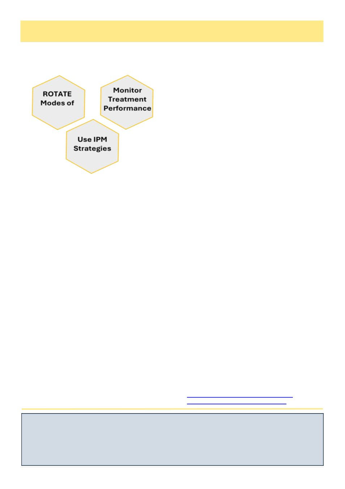

28
Australian Bee Journal
Honey bee waggle dance depends on its audience, study finds
A new study by Chinese scientists reveals that the honey bee waggle dance, one of the most famous examples of
animal communication, is not a one-way communication but, in fact, a dynamic, two-way interaction shaped by its
audience. These findings challenge the traditional view that information flows unidirectionally from dancers to pas-
sive followers. The study, conducted by researchers from the Xishuangbanna Tropical Botanical Garden (XTBG) of
the Chinese Academy of Sciences and their collaborators, was published on March 23.
JOURNAL: Proceedings of the National Academy of Sciences
AHBIC Update, cont’d
cy of treatments [that is, do a soap/alc wash after the
treatment to confirm it was effective].
If you suspect that pyrethroid or amitraz resistance-
carrying mites are in your apiaries or in your area, you
should not use amitraz or pyrethroid products where
possible. Instead use organic acid-based products as
there is no known resistance.
If you are already treating with synthetics and sus-
pect resistance, then act swiftly to test your colonies via
state Bee Biosecurity Officer assistance or privatised
testing facilities. Confirmed synthetic treatment failures
will require changing management practices including
integrated pest management and using only organically
derived treatments to give your colonies the best chance
of survival.
We acknowledge that this news, on top of existing
pressures on beekeepers, is a lot to cope with.
Economic Thresholds – Can be Adapted
The current thresholds are a good guide for beekeep-
ers to adopt. However, they are not fixed or legislated
nor stipulated on product labels. It‟s up to individual
beekeepers and their risk appetite and situation to deter-
mine mite thresholds.
Where there is resistance, beekeepers are reporting
they are struggling to reduce high mite numbers with
acids alone, so re-evaluating thresholds can help in en-
suring you maintain low mite counts in the short term.
If you know or suspect you might have resistance,
it‟s important to consider lowering your mite threshold
to ensure low mite counts can be maintained. Beekeep-
ers need to plan for emergency situations when treat-
ment failure is detected to prevent mite run away in
hives.
Monitor Chemical Treatment Performance
By knowing your mite levels, you can determine not
only when to treat but also whether your treatment
is working.
Pre-treatment
• Alcohol wash hives immediately prior to treatment
to establish a baseline.
• The more hives you wash the better, but at least
10% per apiary.
Record individual hive mite counts (i.e. note wash
result on lids) averaging is also ok but not as accurate.
Mid-treatment
• Alcohol wash hives mid-treatment time, i.e. at
weeks 3-4 (Pyrethroid) and 5-6(Amitraz), to establish
early confirmation of efficacy or potential failure.
• Keep the method consistent.
• You MUST monitor the same hives in the apiary
each time. This will allow a clear comparison to assess
treatment efficacy [note this is distinctly different from
general monitoring for varroa levels in which you
should do different hives each time].
If mite counts are the same or slightly lower than
baseline there is no cause for immediate concern, but it
is important to follow up with post treatment monitor-
ing.
If mite counts are significantly more than the pre-
treatment/baseline in any hive, this is cause for concern
and we recommend:
1. Immediately remove the synthetic treatment, use
an organic acid treatment to knock down phoretic mite
numbers, immediately continue with next treatment in
IPM strategy.
2. Contact your state department apiary team.
Collect mite samples arrange further testing immedi-
ately.
Post-treatment
Alcohol wash hives at treatment removal, not a week
after treatment removal, again following the same pro-
cedure as pre and mid treatment.
If mite counts are the same or more than the baseline
mite numbers you need to take action
1. Consider following up with an urgent organic acid
treatment to knock down phoretic mite numbers as
quickly as possible.
2. Immediately continue with next treatment in IPM
strategy to ensure colony survival.
3. Contact your state department apiary team.
Collect mite samples and arrange further testing im-
mediately.
Further Information
AHBIC Varroa Mite Resistance article
SCU Varroa Resistance In-field Test
(Continued from page 27)